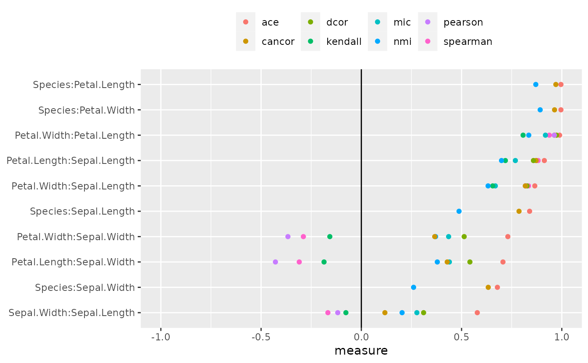

plot_assoc_linear.RdPlots the calculated measures of association among different variable pairs for a dataset in a linear layout.
A tibble with the calculated association measures for every variable pair in the dataset.
Must be of class pairwise, cond_pairwise or multi_pairwise.
a character string for ordering of the pairs of variables in linear layout. One of "default" (default) or "max_diff". When set to "default", pairs are arranged in decreasing order of the absolute value of measure or measures (when multiple measure per pair are present). When set to "max_diff", the ordering is only applicable to assoc with class cond_pairwise or multi_pairwise and the pairs are ordered in descending order of the maximum difference calculated among the measures.
a character string for specifying the type of plot an analyst wants. One of "heatmap" or "dotplot".
a numeric vector specifying the limits of the scale. Default is c(-1,1)
A static ggplot2 plot
plot_assoc_linear(calc_assoc(iris))
plot_assoc_linear(calc_assoc(iris,"Species"))
plot_assoc_linear(calc_assoc_all(iris))
